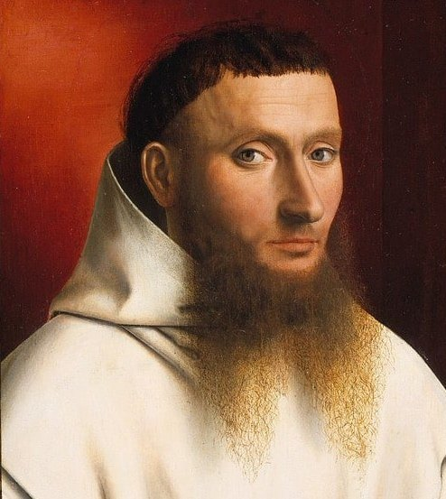

Sacred Scripture
with Commentary by
Blessed Denis the Carthusian
✠

“Let Mother Church rejoice to have such a son!”
Pope Eugene IV
READ
×
Searches the English, or the Latin when the commentary is set to Latin.
‹
›
✠
×
×
Loading…
Commentary by Bl. Denis the Carthusian
English
Latin
References:
Current Chapter
Old Testament
New Testament
Commentary ↓